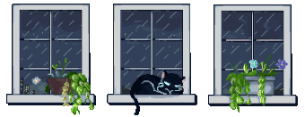
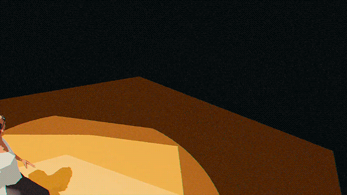
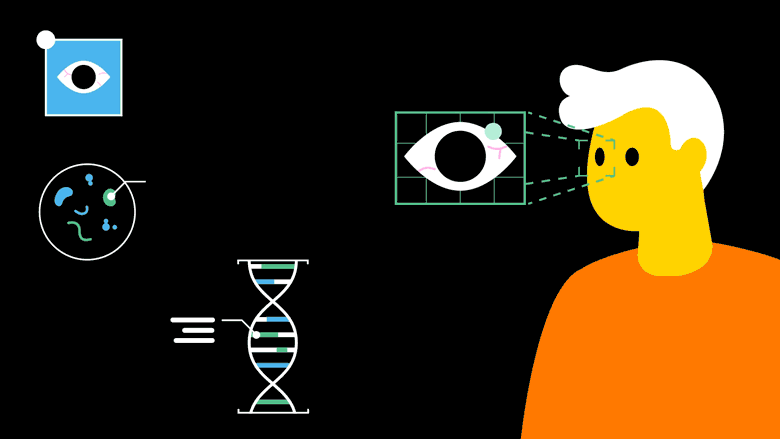
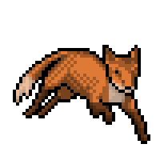
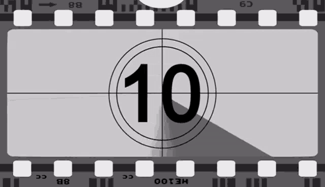
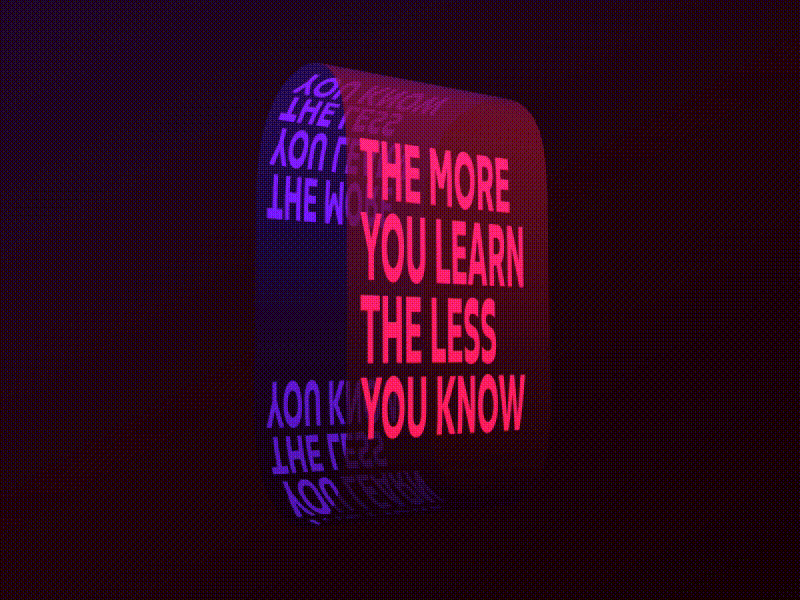
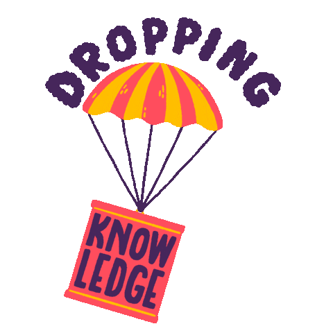

:: Now begins a story...
May I present to you, a finely curated section of a fine collection of the wonderful web we weave with a weekly roundup of bits and pieces from the far corners of the super information highway that I like to call — Token Wisdom ✨

Technology is neither good nor bad; nor is it neutral.
Editor's Notes 📆 Week 3 of 52 // January 12th 🧿 18th, 2025
Welcome to the 91st edition! This week, we're diving into a vibrant mix of tech innovations, strategic insights, and thought-provoking explorations. From AI courtroom showdowns and revolutionary automotive displays to fundraising ingenuity and the UAE's ambitious AI investments, there's something intriguing for every tech enthusiast. Don't miss our video picks, offering insights into AI partnerships and dramatic revelations in the world of finance and technology.
Listen to Google's NotebookLM Duo cover this week's Pearls of Wisdom:


Enjoy The Newest Latest, A Closer Look & Time Well Spent!
🎉 Newest / Latest
100% Authentic Humanly Chosen

AI Legal Battles, Innovative Fundraising, Automotive Revolution: Navigating Today's Tech Labyrinth
From courtroom dramas in AI to revolutionary automotive displays and innovative fundraising strategies, dive into a spectrum of narratives that are reshaping the contours of our technological and societal landscape.
#FundraisingInnovation: Wikipedia's ingenious "Maybe Later" strategy transforms potential rejections into future donations, offering valuable lessons for marketers and non-profits.
#AutomotiveAR: BMW's new iDrive system turns the entire windshield into a heads-up display, merging augmented reality with driving for enhanced safety and user experience.
#DesignFutures: Explore the cutting-edge design trends set to dominate 2025, offering crucial insights for designers and creatives aiming to stay ahead of the curve.
#AIEthics: Mark Zuckerberg's approval for Meta's Llama team to train on copyrighted works raises significant questions about AI development ethics and copyright law.
#SemiconductorExpansion: TSMC's Arizona Fab 21 is already producing 4nm chips, with yield and quality reportedly matching their Taiwan facilities.
#ComputingRevolution: DeepComputing PCs aim to challenge Arm and x86 architectures with the arrival of RISC-V laptops, potentially reshaping the computing landscape.
#TechValuation: An in-depth analysis of Palantir's valuation, exploring the difference between "expensive" and "overvalued" in the context of tech companies.
#SubscriptionStrategies: A comprehensive review of monthly vs. yearly subscription models in 2025, offering insights into pricing strategies for startups.
#AIInvestment: The UAE's intelligence chief, controlling a $1.5 trillion fortune, aims to dominate the AI industry, attracting attention from major tech players.
If you read these ten articles, studies show you'll be 42% more likely to confidently misquote them at your next dinner party. Don't fact-check me on this – I heard it from an AI in a dream.*
👁️ A Closer Look
Attempts to explore a subject and share my thoughts.

The Computational Autocracy: Inside the UAE's Blueprint for AI-Powered Control
W02 - What if your every choice was subtly orchestrated by an invisible digital puppet master? Dive into Abu Dhabi's audacious AI gambit: a chess master's strategy for a future where the lines between choice and command blur. Welcome to the UAE's pioneering realm of computational autocracy.
 🌶️ iamkhayyam
🌶️ iamkhayyamA Closer Look: Explorations in Technology
Weekly essay in the areas of blockchain, artificial intelligence, extended reality, quantum computing, and all the bits and pieces.

📺 Time Well Spent
Top Ten of the Time I Spend

AI Partnerships, Robotic Revelations, and Technological Breakthroughs
From AI-driven innovations and unexpected robotic twists to groundbreaking developments in automotive technology and corporate partnerships, immerse yourself in a world where technology continually redefines the boundaries of creativity and innovation.
#AIEthicalConcerns: Explore the latest AI news, including a shocking incident involving Claude AI, raising important questions about AI ethics and safety.
#WallStreetExposé: Uncover how one woman's efforts exposed major irregularities on Wall Street, focusing on Deutsche Bank's practices.
#VideographyTips: Learn essential videography techniques for capturing great footage in impromptu situations.
#AIEmploymentShift: Analyze how AI is rapidly transforming the job market, potentially pushing more people towards entrepreneurship.
#SemiconductorWarfare: Explore the global struggle for microchip dominance and its far-reaching implications for international relations and technology.
#LeadershipInsights: Gain valuable insights from Simon Sinek on effective leadership and creating a thriving work environment.
#AIScaleup: Candid with Index: Dive into the story of Scale.AI and its impact on the artificial intelligence industry.
#RapidPCBPrototyping: Discover how to prototype PCBs faster than 3D prints, revolutionizing the hardware development process.
#CyberHeistHistory: Explore the first cyber bank heist in history, marking a turning point in digital security and cybercrime.
If you watch these ten videos, statistics have proven your IQ will go up, like, 2 points or something like that. I saw it on Perplexity.*
✨Token Wisdom
Knowledge Transmuted
In this edition of Token Wisdom, we've explored the intersection of groundbreaking technology and vibrant cultural creativity with The Newest Latest on Side A. Our journey on the flip side was Time Well Spent and has highlighted both technological innovations and the enduring importance of human creativity and insight.
In an era defined by rapid technological progress, we see innovations ranging from BMW's augmented reality windshields to TSMC's advanced chip production in Arizona. This blend of cutting-edge technology and global expansion prompts us to consider how these advancements embody our continuous drive for innovation while navigating complex geopolitical landscapes.
Our societal discussions, encompassing everything from AI ethics and ownership battles to innovative fundraising strategies and the future of computing, create a detailed blend of technological influence and cultural awareness. These themes highlight how advancements in technology are not only transforming our tools but also reshaping our legal, ethical, and economic landscapes.
Despite rapid innovation, a key understanding endures: the human element remains crucial. Whether it's exposing financial irregularities on Wall Street or creating innovative solutions for media distribution in challenging environments, the value of human ingenuity and perseverance remains unmatched.
Thank you for exploring creativity, culture, and technology with us. True mastery comes from effectively applying knowledge. This provides the profound stories created by the intersection of technology and human experience that inspire us to do better.

🌈💫 The Less You Know
The More You Learn
Latest Technologies & Innovations:
- BMW's iDrive system with AR windshield display
- TSMC's 4nm chip production in Arizona
- RISC-V laptops by DeepComputing
- UAE's $1.5 trillion AI investment initiative
- Sentient, USA's top-secret AI system for global predictions and surveillance
- Cuba's offline digital media distribution system
Most Important Topics:
- AI ethics and ownership battles
- Innovative fundraising strategies (e.g., Wikipedia's "Maybe Later" button)
- Semiconductor industry expansion and competition
- AI's impact on employment and entrepreneurship
- Cybersecurity and digital heists
- Global microchip dominance struggle
Acronyms:
- AR (Augmented Reality)
- AI (Artificial Intelligence)
- TSMC (Taiwan Semiconductor Manufacturing Company)
- RISC-V (Reduced Instruction Set Computer - Five)
- UAE (United Arab Emirates)
Technical Terms:
- iDrive: BMW's in-car control and infotainment system, now featuring an augmented reality windshield display for enhanced driver information and interaction.
- Heads-up display: A transparent display that presents data without requiring users to look away from their usual viewpoints. In automotive contexts, it projects information onto the windshield.
- 4nm chips: Semiconductor chips manufactured using a 4-nanometer process, representing one of the most advanced and miniaturized chip technologies currently in production.
- Fab: Short for "fabrication plant," a specialized facility where semiconductor devices, such as computer chips, are manufactured.
- x86 architecture: A family of backward-compatible instruction set architectures based on the Intel 8086 CPU, commonly used in personal computers and servers.
- Computational autocracy: A system of governance that leverages advanced computational technologies, particularly AI, to exert control and influence over a population.
- Claude AI: An artificial intelligence model developed by Anthropic, known for its conversational abilities and ethical considerations.
- Sentient (AI system): A top-secret AI system reportedly used by the USA for global predictions and surveillance, utilizing satellite data and advanced analytics.
Embrace the pursuit of knowledge, for it's in learning that we forge the tools to shape a better tomorrow. Sign up for more Token Wisdom and carry the torch of foresight into the fathomless domains of innovation and beyond.
Until next time: stay smart, and kind, and definitely stay weird!
Become a Token Wisdom subscriber
Illuminate your inbox with the light of knowledge. ✨
Thank you for cruising by the Cult of Innovation
We’re making some Stone Soup here. If you enjoyed this amuse-bouche of news compilations in bite-sized morsels, please share it with your friends and help feed a community. Mmmm. #nomnom.
